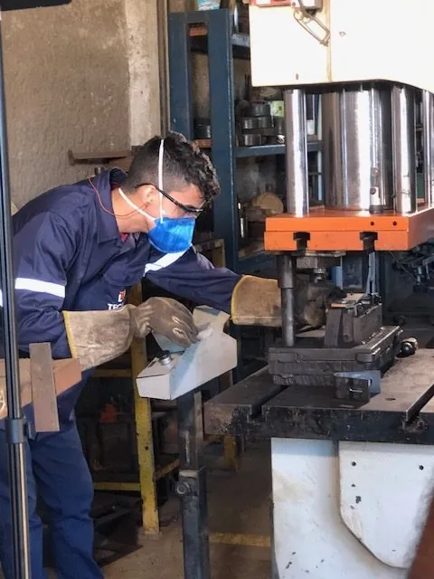
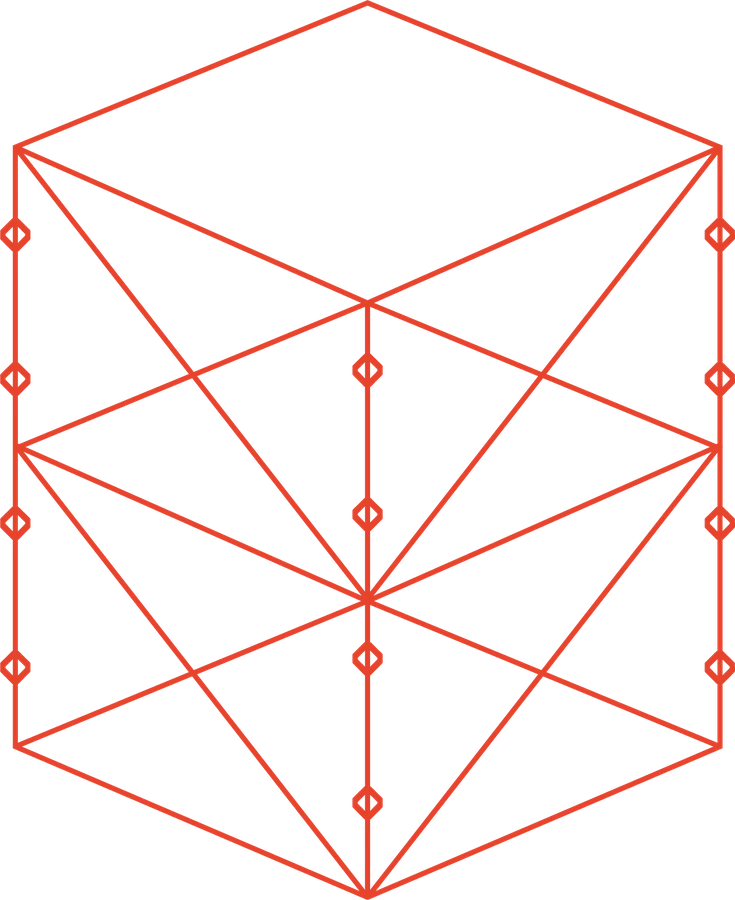
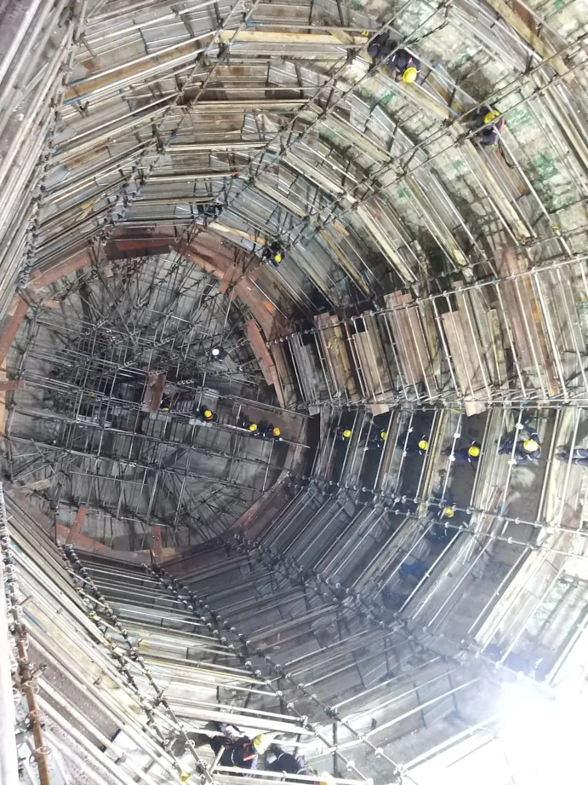
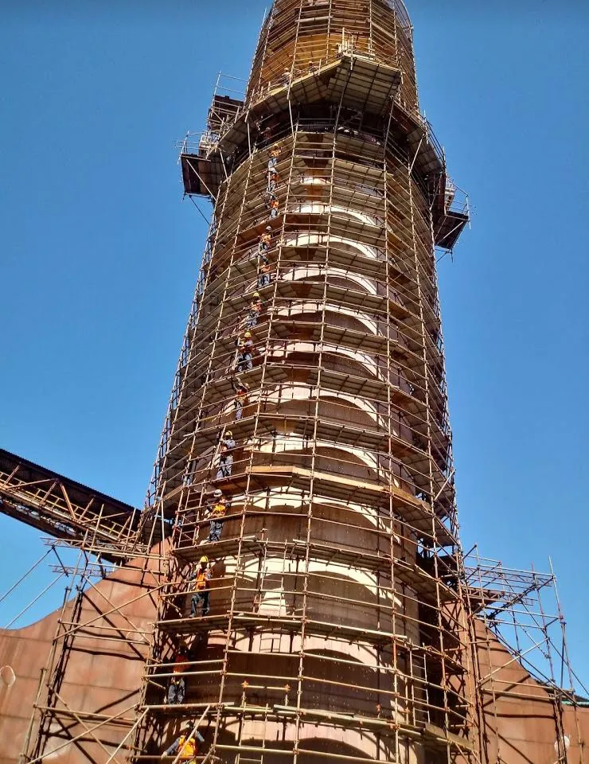
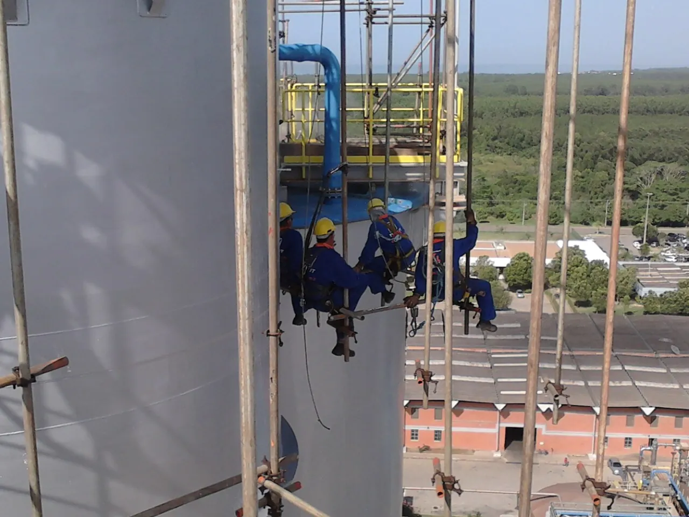
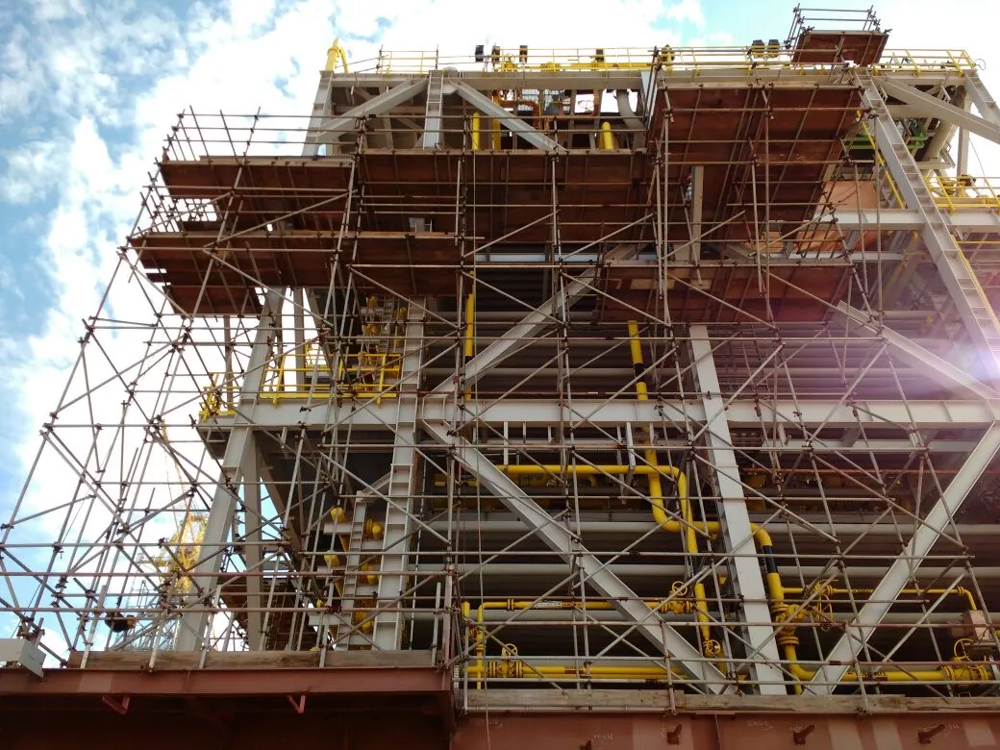

01
Locação de andaimes
Andaime multidirecional, fachadeiro e tubo e braçadeira, para parada de manutenção, obra industrial e construção civil. Entrega, montagem e desmontagem com equipe própria.
Ver locação de andaimesAracruz, Espírito Santo · desde 1992
Montagem feita por equipe própria, capacitada em NR 18 e NR 35. A mesma turma de uma frente de serviço para a outra, em todo o Espírito Santo.
Atendimento em todo o Espírito Santo
Segunda a sexta, horário comercial. Base em Aracruz.
Quem contrata
Samarco Suzano Bracell
Indústria de celulose, mineração e manutenção pesada. [[PENDENTE: lista de clientes com logo aprovada]]
O que fazemos
O mesmo galpão que fabrica o andaime da locação corta tubo e chapa para terceiros. Isso encurta reposição de peça e permite componente fora de padrão.
01
Andaime multidirecional, fachadeiro e tubo e braçadeira, para parada de manutenção, obra industrial e construção civil. Entrega, montagem e desmontagem com equipe própria.
Ver locação de andaimes
02
Fabricação própria de andaime e de estrutura metálica sob encomenda, em aço carbono, aço inoxidável, titânio e duplex. Venda para todo o Brasil, porque o frete se dilui no volume.
Ver venda e fabricação
03
Equipe própria de montadores, com operação conforme as normas NR 18 e NR 35. Atende parada programada, manutenção industrial e obra em altura.
Ver montagem e desmontagem
04
Corte de tubo e de chapa para terceiros, no mesmo maquinário usado na fabricação dos nossos andaimes. Envie o desenho e receba a peça cortada.
Ver corte a laserO sistema
O sistema Tec Lit foi desenvolvido em 1992 e é fabricado pela própria empresa. A fixação entre montante e travessa é feita por garras, sem peça solta na frente de trabalho.
[[PENDENTE: medição que sustenta o ganho de tempo de montagem]]
Ver o andaime multidirecional
Como funciona
O orçamento nasce da lista de material. É por isso que a primeira pergunta do nosso formulário é se você já tem essa lista.
Com a lista de peças, de metros ou de pessoas, o orçamento sai direto. Se você ainda não tem a lista, informe a altura, a área aproximada e o tipo de obra, e montamos a lista junto com você.
Verificamos o tipo de estrutura, o acesso disponível e o prazo da obra. O orçamento sai com o material, o serviço e o que é cobrado à parte separados.
Saída do galpão em Aracruz para a obra, em todo o Espírito Santo. Para venda e fabricação, atendemos também outros estados.
Montagem com equipe própria, conforme NR 18 e NR 35, ou entrega do material para a sua equipe montar. A desmontagem entra no mesmo contrato.
Tipos de obra
Chaminé, digestor, silo e estrutura sobre o mar não aceitam o mesmo arranjo de andaime. Estas são as tipologias que a Tec Lit monta com mais frequência.

Planta inteira em andaime, com prazo curto e frente de trabalho simultânea.

Andaime circular montado por dentro do equipamento, sem apoio no costado.

Estrutura vertical envolvida do solo ao topo, com amarração na própria peça.

Acesso lateral contínuo em superfície cilíndrica, com plataforma em cada nível.

Terminal e plataforma portuária, com montagem suspensa e logística por acesso restrito.
Setores
A maior parte da operação acontece dentro de planta em funcionamento, com liberação de área, permissão de trabalho e janela de parada definida pelo cliente.
Atendimento
A base fica no Centro Empresarial Vila do Riacho, em Aracruz. A locação e a montagem atendem o estado inteiro. Venda e fabricação atendem outros estados.
Perguntas frequentes
A locação e a montagem atendem todo o Espírito Santo, a partir da base em Aracruz. Venda e fabricação atendem outros estados, porque são fornecimentos pontuais e o frete se dilui no volume. Já fornecemos para obras em Minas Gerais e São Paulo, e vencemos licitação de fornecimento no Paraná.
A lista de material é o que permite orçar: quantidade de peças, de metros ou de pessoas na frente de trabalho. Com ela, o orçamento sai direto.
Se você ainda não tem a lista, informe a altura, a área aproximada, o tipo de obra e quando precisa do material. A partir disso montamos a lista com você.
As duas formas. Você pode alugar o material e montar com a sua equipe, ou contratar a locação com montagem e desmontagem feitas pela nossa equipe própria, conforme as normas NR 18 e NR 35.
É o sistema de andaime multidirecional que a empresa desenvolveu e fabrica desde 1992. A fixação é feita por garras, que dispensam braçadeira, parafuso e chave de catraca na montagem.
Isso reduz o tempo de montagem em relação ao andaime de tubo e braçadeira, dá melhor travamento na madeira do piso e permite montar em estrutura cilíndrica e poligonal.
Sim. A fabricação é própria, com maquinário de corte a laser. Além do andaime, fabricamos estrutura metálica sob encomenda em aço carbono, aço inoxidável, titânio e duplex, de tubulação e tanque a equipamento específico.
A operação segue a NR 18, que trata das condições de trabalho na construção, e a NR 35, que trata de trabalho em altura. Montagem, inspeção e liberação do andaime seguem esses requisitos.
Orçamento
Se você ainda não tem a lista, informe a altura e a área aproximada da obra. Começamos a montar a lista com você.
27 99701 2214
Segunda a sexta, horário comercial